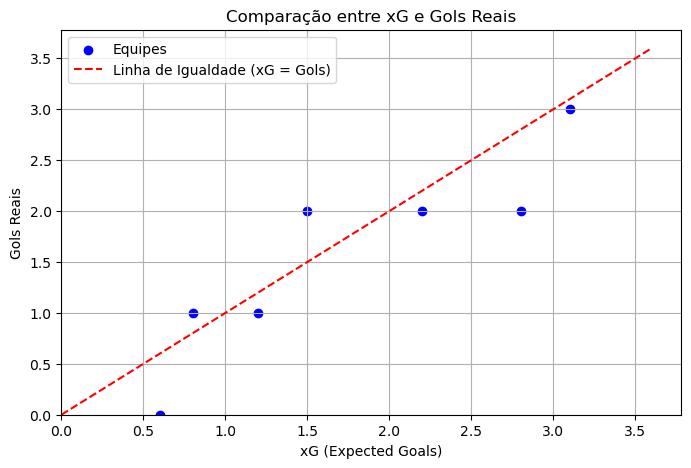
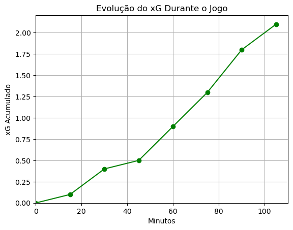
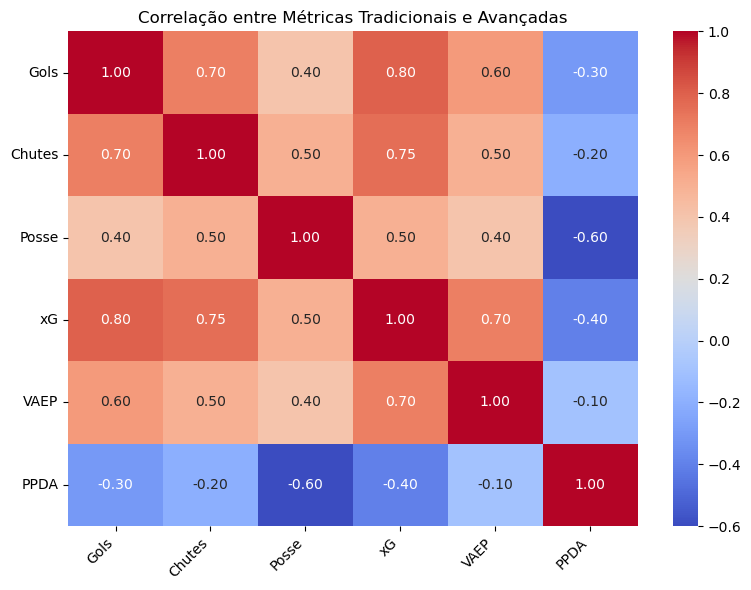
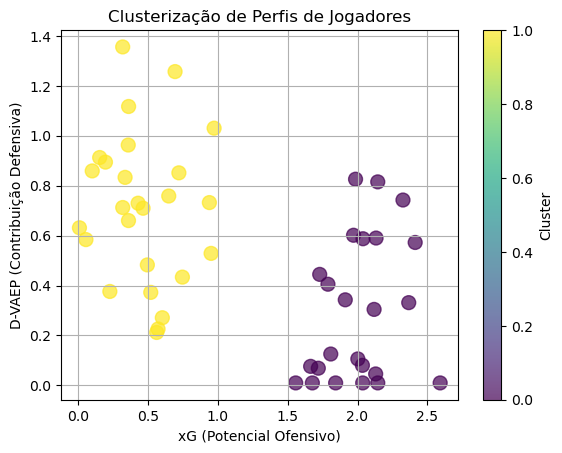
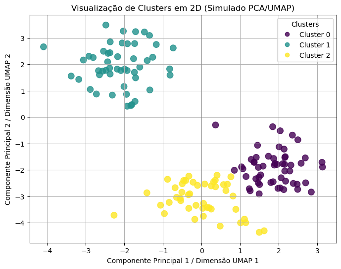
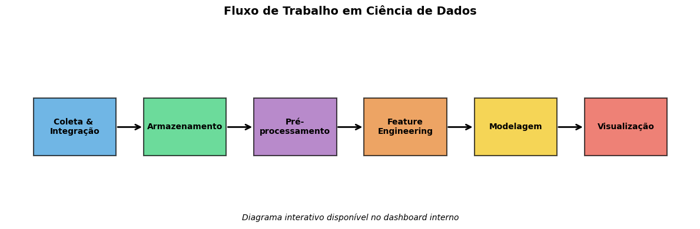
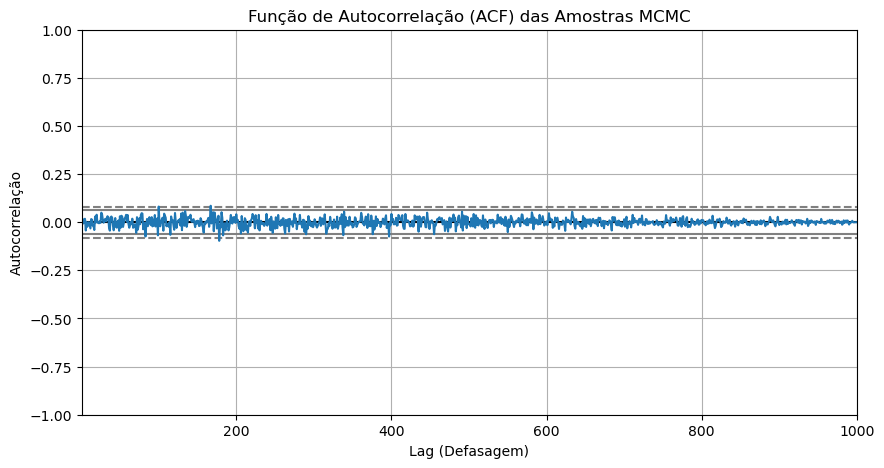
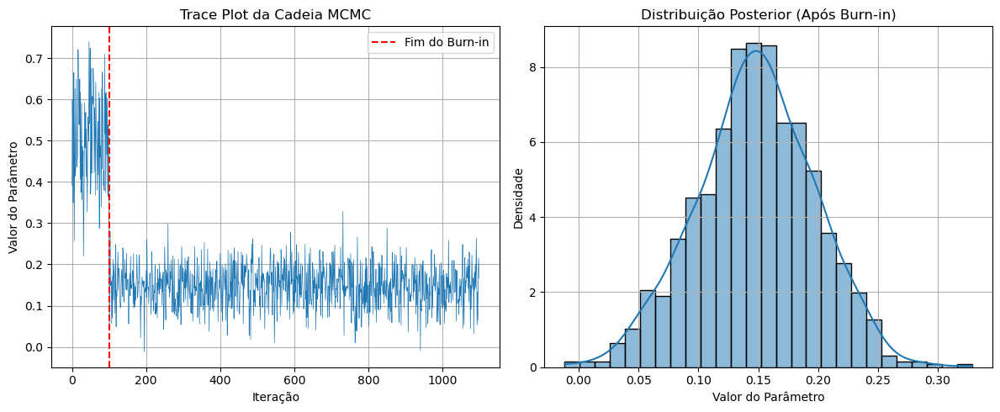

Uso de Dados na Análise Tática Moderna
1. Evolução histórica da análise tática
1950–1980 │ Primeiros experimentos manuais
- 1950s – Charles Reep registra toque‑a‑toque em fichas de papel, gerando a primeira base quantitativa sobre padrões de ataque e probabilidade de gol.
- Estudos focavam em contagens simples (passes, chutes) e relatórios qualitativos, limitados pela tecnologia de filmagem.
1990–2005 │ Digitalização e sistemas de vídeo
- 1995 – Prozone lança o primeiro sistema comercial de rastreamento por câmera no futebol inglês.
- Clubes da Premier League e seleções de rúgbi usam Prozone para ajuste tático e recrutamento, inspirando “Moneyball”.
2005–2015 │ Era dos sistemas de rastreamento ótico & GPS
- 2005 – SportVU nasce em Israel; em 2013, adotado pela NBA, mostrando potencial de rastreamento em tempo real.
- Plataformas como Amisco, Tracab e Catapult ampliam sensores e wearables.
- 2015 – IFAB/FIFA legaliza EPTS em partidas oficiais.
2012–2020 │ Métricas avançadas e dados abertos
- 2012 – Expected Goals (xG) populariza modelos de probabilidade de gol.
- Surgem modelos de valor de ação (VAEP, EPV) combinando evento e rastreamento.
- 2018 – StatsBomb Open Data democratiza dados de eventos.
2020–2025 │ IA, big data e volumetria 3D
- 2020 – Second Spectrum fornece métricas táticas em tempo real na Premier League.
- Intel True View traz replay volumétrico 3D para LaLiga, NFL e UCL.
- Edge/5G e XAI transformam dados brutos em insights.
2. Tipos de dados disponíveis
| Grupo | Origem | Exemplos | Informação tática |
|---|---|---|---|
| Rastreamento | Câmeras, GPS, UWB | posição, velocidade, acel. | formações, zonas de pressão |
| Evento | Opta, Wyscout, StatsBomb | passes, chutes, faltas | sequência de ações com bola |
| Vídeo/Imagem | Transmissão, drones | frames sincronizados | contexto visual, gestos |
| Biométricos | Wearables, GPS | FC, distância, impactos | fadiga, risco de lesão |
3. Métricas tradicionais × avançadas
3.1 Por que ultrapassar contagens?
Contagens (gols, assistências, % de passe) são intuitivas, mas não capturam contexto espacial ou tático. Métricas avançadas estimam valor e consequência de ações.
3.2 Contagens & Taxas
| Métrica | Descrição | Limitação |
|---|---|---|
| Gols / Assistências | Eventos finais de ataque | Alta variância |
| % Passe | Passes certos ÷ totais | Ignora risco e impacto |
| Chutes a gol | Finalizações no alvo | Qualidade ignorada |
| Desarmes/Intercept. | Ações defensivas bem‑sucedidas | Sem contexto espacial |
3.3 Valor de Ação/Posse
| Acrônimo | Essência |
|---|---|
| xG | Prob. de gol de um chute |
| xA | Prob. de gol resultante de um passe |
| xT | Valor da posse em células (cadeia de Markov) |
| VAEP | Δ prob. gol contra/pro gol em sequência de ações |
| EPV | Valor esperado da posse a cada frame (tracking 25 Hz) |


3.4 Pressão & Defesa
| Métrica | Cálculo |
|---|---|
| PPDA | Passes permitidos ÷ ações defensivas altas |
| BDP | Variação da % passe rival na construção |
| D‑VAEP | Δ prob. gol adversário por ação defensiva |

3.5 Clustering & Perfis
- K‑Means/MiniBatch para perfis táticos.
-
PCA + t‑SNE/UMAP para visualização de alta dimensão.
-
Roles dinâmicos via tracking.
 
4. Fluxo de processamento e modelagem

5. Modelos analíticos, MCMC e otimização
5.1 Modelos estatísticos & heurísticos
- Regressão logística/LASSO multinomial para P(vitória).
- Árvores de decisão e Gradient Boosting para eventos críticos.
- Random Forest/XGBoost para importância de features.
- Meta‑heurísticas (GA, GRASP, ALNS) e CP‑SAT para escalações.
- Deep RL/MARL para políticas táticas em ambientes parciais.
5.2 Inferência Bayesiana & MCMC
- MCMC: exploração aleatória que converge à distribuição posterior.
- ESS: calcula tamanho efetivo de amostras para regularização e early-stopping.
- Hamiltonian MC/NUTS, SGLD/SGHMC e inferência variacional para acelerar.
- Priors hierárquicos e sequential MC para evitar overfitting.


5.3 Feature Engineering Avançado
- Terraint embedding (VAE), sinergia (Elo/TrueSkill).
- Zone control, entropia de crença inimiga, momentum.
- Embeddings temporais (GRU/TCN) e priors SGLD.
6. Análise de desempenho individual
- Fusão de evento + rastreamento valoriza cada ação.
- Indicadores físicos (sprints, cargas) para fadiga.
- Clustering de substitutos e perfis.
7. Aplicações táticas em tempo real
- Dashboards ao vivo e alertas de fadiga.
- Simulações contrafactuais e IA prescritiva.
8. Desafios atuais
- Cobertura desigual em ligas menores.
- Latência e volume nos pipelines.
- Viés algorítmico e interpretabilidade.
9. Tendências futuras
- Edge/5G e integração de wearables avançados.
- Modelos XAI e assistentes conversacionais.
10. Conclusões
- Evolução de contagens manuais a pipelines de Big Data.
- Sinergia de múltiplas fontes para visão holística.
- Técnicas avançadas trazem vantagem competitiva.
11. Referências Selecionadas
Internal docs: Evolução da análise tática, Dados usados na análise tática moderna, etc.
Gelman, A. et al. “Bayesian Data Analysis” (3rd ed., 2013).
Betancourt, M. “A Conceptual Introduction to HMC and NUTS” (2017).
StatsBomb, The Analyst, Coaches’ Voice, FootSci articles (2023–2024).
T. A. Herberger e C. Litke, “The impact of big data and sports analytics on professional football: a systematic literature review”, em Digitalization, Digital Transformation and Sustainability in the Global Economy, T. A. Herberger e J. J. Dötsch, Orgs., em Springer Proceedings in Business and Economics. , Cham: Springer International Publishing, 2021, p. 147–171. doi: 10.1007/978-3-030-77340-3_12.
M. T. Muhammed, O. Waeal J, e R. Bijan, “Applying deep learning techniques for big data analytics: a systematic literature review”, Arch. Inf. Sci. Technol., vol. 1, no 1, dez. 2018, doi: 10.36959/863/756.
K. J. Robinson, P. Wui, e K. Tiwari, “The impact of analytics in sports: An examination of practice and potential”, 2023.
H. Xia et al., “Language and multimodal models in sports: a survey of datasets and applications”, 18 de junho de 2024, arXiv: arXiv:2406.12252. doi: 10.48550/arXiv.2406.12252.
K. T. Islam e M. H. Nahid, “Applications & implications of data-driven analytics in the football player valuation”, SHS Web Conf., vol. 204, p. 4006, 2024, doi: 10.1051/shsconf/202420404006.
B. G. Jaiyesimi, O. M. Ikumapayi, M. I. Stella, S. A. Afolalu, e A. Oguntimilehin, “Role of artificial intelligence and big data in enhancing athletic performance”, em 2024 IEEE 5th International Conference on Electro-computing Technologies for Humanity (NIGERCON), Ado Ekiti, Nigeria: IEEE, nov. 2024, p. 1–5. doi: 10.1109/NIGERCON62786.2024.10927003.
S. Ma, “Integrating sports education with data analysis and computer technology: a new paradigm for enhanced athletic performance”, Appl. Comput. Eng., vol. 57, no 1, p. 178–183, abr. 2024, doi: 10.54254/2755-2721/57/20241330.
A. H. Mohammed, Z. J. Othman, e A. I. Abdullah, “The role of artificial intelligence in enhancing sports analytics and training”, Cihan Univ.-erbil Sci. J., vol. 8, no 1, p. 58–62, jun. 2024, doi: 10.24086/cuesj.v8n1y2024.pp58-62.
Suraj Bhosale e Samrat Ray, “A review paper on the emerging trends in sports analytics in India”, World J. Adv. Res. Rev., vol. 19, no 2, p. 461–470, ago. 2023, doi: 10.30574/wjarr.2023.19.2.1623.
Q. Zeng, “AI-driven fitness solutions: utilizing biosensors for personalized training plans and optimal athletic results”, Mol. Cell. Biomech., vol. 22, no 3, p. 973, fev. 2025, doi: 10.62617/mcb973.
“The impact of data analytics on player performance in professional sports a systematic review”, Int. Res. J. Mod. Eng. Technol. Sci., maio 2023, doi: 10.56726/IRJMETS37597.
Ogugua Chimezie Obi, Samuel Onimisi Dawodu, Shedrack Onwusinkwue, Femi Osasona, Akoh Atadoga, e Andrew Ifesinachi Daraojimba, “Data science in sports analytics: a review of performance optimization and fan engagemen”, World J. Adv. Res. Rev., vol. 21, no 1, p. 2663–2670, jan. 2024, doi: 10.30574/wjarr.2024.21.1.0370.
A. Wijaya, M. A. Al Ardha, N. Nurhasan, C. B. Yang, R. H. Lin, e A. B. Putro, “Exploring the research trend and development of sports science technology in the last 4 decades: Systematic review”, Retos, vol. 61, p. 655–667, out. 2024, doi: 10.47197/retos.v61.109306.
X. Tan, “Enhanced sports predictions: A comprehensive analysis of the role and performance of predictive analytics in the sports sector”, Wireless Pers. Commun., vol. 132, no 3, p. 1613–1636, out. 2023, doi: 10.1007/s11277-023-10585-z.
R. M. Rodenberg, J. Sackmann, e C. Groer, “Tennis integrity: A sports law analytics review”, Int. Sports Law J., vol. 16, no 1–2, p. 67–81, jul. 2016, doi: 10.1007/s40318-016-0096-x.
E. Glebova, D. Ø. Madsen, P. Mihaľová, G. Géczi, A. Mittelman, e B. Jorgič, “Artificial intelligence development and dissemination impact on the sports industry labor market”, Front. Sports Active Living, vol. 6, p. 1363892, mar. 2024, doi: 10.3389/fspor.2024.1363892.
J. Bridgeman e A. Giraldez-Hayes, “Using artificial intelligence-enhanced video feedback for reflective practice in coach development: Benefits and potential drawbacks”, Coach.: Int. J. Theory Res. Pract., vol. 17, no 1, p. 32–49, jan. 2024, doi: 10.1080/17521882.2023.2228416.
A. Kaur, R. Kaur, e G. Jagdev, “Analyzing and exploring the impact of big data analytics in sports sector”, SN Comput. Sci., vol. 2, no 3, p. 184, maio 2021, doi: 10.1007/s42979-021-00575-y.
J. Mizels, B. Erickson, e P. Chalmers, “Current state of data and analytics research in baseball”, Curr. Rev. Musculoskelet. Med., vol. 15, no 4, p. 283–290, ago. 2022, doi: 10.1007/s12178-022-09763-6.
Z. Pu et al., “Orientation and decision-making for soccer based on sports analytics and AI: A systematic review”, IEEE/CAA J. Autom. Sinica, vol. 11, no 1, p. 37–57, jan. 2024, doi: 10.1109/JAS.2023.123807.
S. Krizkova, H. Tomaskova, e E. B. Tirkolaee, “Sport performance analysis with a focus on racket sports: A review”, Appl. Sci., vol. 11, no 19, p. 9212, out. 2021, doi: 10.3390/app11199212.
L. M. Hvattum, “A comprehensive review of plus-minus ratings for evaluating individual players in team sports”, Int. J. Comput. Sci. Sport, vol. 18, no 1, p. 1–23, jul. 2019, doi: 10.2478/ijcss-2019-0001.
E. Santos-Fernandez, P. Wu, e K. L. Mengersen, “Bayesian statistics meets sports: A comprehensive review”, J. Quant. Anal. Sports, vol. 15, no 4, p. 289–312, out. 2019, doi: 10.1515/jqas-2018-0106.
M. A. Al-Asadi e S. Tasdemir, “Empirical comparisons for combining balancing and feature selection strategies for characterizing football players using FIFA video game system”, IEEE Access, vol. 9, p. 149266–149286, 2021, doi: 10.1109/ACCESS.2021.3124931.
D. Patel, D. Shah, e M. Shah, “The intertwine of brain and body: A quantitative analysis on how big data influences the system of sports”, Ann. Data Sci., vol. 7, no 1, p. 1–16, mar. 2020, doi: 10.1007/s40745-019-00239-y.
F. R. Goes et al., “Unlocking the potential of big data to support tactical performance analysis in professional soccer: A systematic review”, Eur. J. Sport Sci., vol. 21, no 4, p. 481–496, abr. 2021, doi: 10.1080/17461391.2020.1747552.
Histórico de Versões
| Versão | Data | Descrição | Autor(es) |
|---|---|---|---|
1.0 |
01/05/2025 | Passando a pesquisa do membro para o site | Thales Euflauzino |